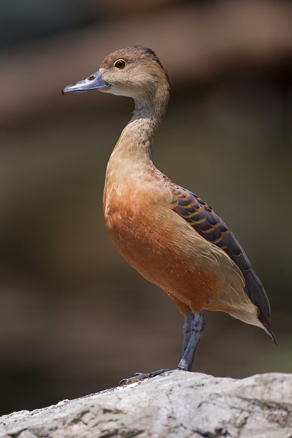

सीटी बत्तखLesser Whistling Duck
Dendrocygna javanica · Anatidae · BRD-0023

- Scientific name
- Dendrocygna javanica (Horsfield, 1821)
- Family
- Anatidae
- Hindi
- सीटी बत्तख
- Status here
- native
- IUCN
- LC
When to look कब देखें
Present all year.
सीटी बत्तख / Lesser Whistling Duck
Dendrocygna javanica (Horsfield, 1821) — Anatidae
सीटी बत्तख (सिल्ली) — हमारे ग्रामीण तालाबों, झीलों और जलभराव वाले धान के खेतों में पाया जाने वाला एक छोटा, मुख्य रूप से भूरे-शाहबलूत (chestnut) रंग का बत्तख है। इसका यह नाम इसकी उड़ान के दौरान निकलने वाली अत्यंत विशिष्ट, सुरीली सीटी जैसी आवाज (see-see-see) के कारण पड़ा है, जो रात में भी आसमान पार करते झुंडों से सुनाई देती है। अन्य सामान्य बत्तखों के विपरीत, सिल्ली के पैर अपेक्षाकृत लंबे होते हैं और यह जलभराव वाले स्थानों के पास लगे बड़े पेड़ों की शाखाओं पर बैठने (perching) की एक अनूठी और अनोखी आदत रखती है। यह मुख्य रूप से शाकाहारी है और पानी में तैरती वनस्पति तथा जलीय पौधों के बीजों को खाता है। मानसून के समय जलस्रोतों के विस्तार के साथ इनकी स्थानीय हलचल काफी बढ़ जाती है।
Quick Identification त्वरित पहचान
| Feature | Description |
|---|---|
| Size | Small, goose-like duck (around 38–43 cm total length); long-necked and long-legged silhouette |
| Plumage | Chestnut-brown body; greyish-buff head and neck; rich rufous-chestnut upper-tail coverts |
| Face & Eyes | Dark brown crown; narrow, distinct yellow eye-ring (orbital ring) surrounding dark brown eyes |
| Bare Parts | Bill is dark slate-grey to blackish; long legs and webbed feet are blue-grey |
| Behaviour | Often perches on trees surrounding water; flies in compact flocks with whistle-like wing rustling |
Field tip: Look for them resting in groups on leafy branches of trees (like babool or jamun) bordering village ponds during hot mid-days. When disturbed or when flying in flocks at dawn and dusk, they emit a constant whistling chorus that makes them instantly recognizable.
Morphology आकारिकी
Biometrics (typical measurements in the northern Indian plains):
| Measurement | Range |
|---|---|
| Total length | 380–430 mm |
| Wing (flattened chord) | 170–204 mm |
| Tail | 45–60 mm |
| Tarsus | 40–50 mm |
| Bill (culmen from base) | 38–42 mm |
| Weight | 450–680 g |
Plumage: The crown is dark brown, fading to pale brownish-grey on the neck and sides of the head. The upper mantle is dark grey-brown with pale rufous fringes, giving a scaled appearance. The lower back and rump are blackish. The wing-coverts are dark brown with bright chestnut-rufous patches on the lesser and median coverts. The underparts are warm chestnut-brown, lighter on the breast and turning to buff on the vent. The upper-tail coverts are rich rufous-chestnut, without white markings.
Bare parts: The bill is flat, wide, and slaty-grey with a dark nail at the tip. The irises are dark brown, highlighted by a narrow yellow orbital ring. The long legs and webbed feet are slaty blue-grey.
Vocalisations
Lesser Whistling Ducks are highly vocal, especially while in flight.
- Flight call: A clear, repetitive, high-pitched whistling see-see-see-whi-whi or whee-chi (ranging from 1.5 to 3.5 kHz), produced by the flapping of the primary feathers as well as vocally, creating a mechanical and vocal whistling sound when flocks move.
- Song/Breeding call: Soft, low whistling chirps used by mates to communicate while swimming or resting on branches.
Ecological Role पारिस्थितिक भूमिका
Herbivorous waterfowl. Lesser Whistling Ducks feed mostly on aquatic plants and grass seeds.
- Seed disperser: By consuming seeds of aquatic weeds and marsh grasses, they act as key vectors for endozoochorous seed dispersal across different wetland networks.
- Arboreal roosting niche: Their ability to roost and nest in trees reduces competition for ground nesting space near heavily populated wetlands.
Life Cycle / Phenology जीवन चक्र
- Breeding season: June to October, aligning with the monsoon rain and crop sowing period.
- Nesting: Highly versatile; they build nests in tree hollows, forks of mature trees (like peepal or mango), or directly on the ground in dense reeds and sugarcane fields near water.
- Nest material: A cup-shaped structure made of twigs, grass, and aquatic leaves, sometimes lined with their own down feathers.
- Clutch size: 7 to 12 milk-white, smooth eggs.
- Incubation: 28–30 days, shared by both parents.
- Fledging: The nidifugous chicks hatch with thick down and are coaxed by parents to jump down from tree nests into the water. They fledge in about 45–50 days.
Host Plants or Prey आहार
Primary food items:
- Plants: Seeds of water lilies (Nymphaea nouchali), wild rice (Oryza spp.), water hyacinth roots, and shoots of aquatic grasses.
- Invertebrates: Occasional small freshwater snails, water beetles, and insect larvae taken while filtering water.
Predators / Natural Enemies शत्रु
- Bengal Monitor (Varanus bengalensis) — climbs trees to raid nests and consume eggs.
- House Crow (Corvus splendens) and Large raptors — hunt ducklings and steal eggs.
- Large Water Snakes (such as Checkered Keelback — Xenochrophis piscator) — prey on ducklings in shallow weeds.
Agricultural / Human Relevance कृषि प्रासंगिकता
Paddy visitor. They forage in flooded paddy fields, feeding on wild grass seeds and spilled grains. While farmers occasionally worry about seed consumption, the ducks also eat pest snails and weed seeds, providing ecological balance.
Hunting pressure. Historically, they were heavily hunted for meat in regional wetlands. Increased protection under the Wildlife Protection Act and local village vigilance have reduced poaching, allowing populations to remain stable near human settlements.
Expected Locally स्थानीय रूप से अपेक्षित
Not a field record. Written from published accounts for eastern Uttar Pradesh. No confirmed local sighting yet — if you have seen it, that is what the atlas needs.
अभी तक स्थानीय पुष्टि नहीं। यह विवरण प्रकाशित स्रोतों से है, किसी अवलोकन से नहीं।
A very common resident with local movements in the Basti and Ayodhya areas. Large congregations of 100–300 birds can be seen in winter on vegetation-rich wetlands like the Bakhira Bird Sanctuary nearby. In the breeding season (monsoon), smaller groups of 5–15 birds disperse to village ponds (talab) and flooded agricultural depressions, frequently roosting on old branches of thorny babool (Acacia nilotica) trees overhanging the water.
Distribution वितरण
Global range: Widespread across South and Southeast Asia, from Pakistan, India, Nepal, Sri Lanka, and Bangladesh, to Myanmar, Thailand, Southern China, Vietnam, Malaysia, and Indonesia.
In India: Widespread in plains and lower valleys throughout the country, absent only in deserts and high mountains.
In Uttar Pradesh: A common resident across all districts, showing high seasonal abundance on rural wetlands.
In Basti district / eastern UP: Abundant in village tanks, waterlogged depressions, and canals.
Range notes: Local movements are driven by the drying up of temporary wetlands in summer.
Research Questions शोध प्रश्न
Anyone can investigate these | कोई भी इन प्रश्नों की जाँच कर सकता है
- Do Lesser Whistling Ducks in your village prefer nesting on trees or on the ground in reeds? / आपके गाँव में सीटी बत्तख पेड़ों पर घोंसला बनाना अधिक पसंद करती है या झाड़ियों/घास में जमीन पर? — Search for nests in the monsoon and record their height and location.
- What is the daily activity pattern of roosting whistling ducks on trees during hot summer days? — Record when they feed on water vs. when they rest on branches.
- How does the presence of water hyacinth (Eichhornia crassipes) affect the foraging success of Whistling Ducks? / जलकुंभी की अधिकता सीटी बत्तख के तैरने और भोजन खोजने की दर को कैसे प्रभावित करती है? — Compare duck density in open ponds vs. weed-covered ponds.
- How do parents guide nestlings to jump down from tree nests, and what is the mortality rate during this transition? — Observe and record nesting trees during hatching events.
- How does flock size change in your local pond between the dry summer months and the post-monsoon winter? — Count ducks monthly to map seasonal population shifts.
Similar Species मिलती-जुलती प्रजातियाँ
| Species | How to tell apart | हिंदी |
|---|---|---|
| Fulvous Whistling Duck (Dendrocygna bicolor) | Slightly larger; creamy-white upper-tail coverts; dark line down the back of the neck; less common | बड़ी सिल्ली — क्रीम रंग की पूंछ और बड़ा आकार |
| Cotton Pygmy Goose (Nettapus coromandelianus) | Much smaller (26 cm); white face and breast; black collar in breeding males; nests in tree hollows | गिरिजा — बहुत छोटा आकार और मुख्य रूप से सफेद रंग |
| Common Teal (Anas crecca) | Slender built; breeding male has green eye-patch and chestnut head; winter migrant; does not perch on trees | छोटी बत्तख — केवल सर्दियों में, पेड़ों पर नहीं बैठती |
Field rule: Small chestnut-brown duck, long neck and legs, rich rufous-chestnut upper-tail coverts (no white), yellow eye-ring, and distinctive whistling flight calls identify the Lesser Whistling Duck.
Taxonomy & Classification वर्गीकरण
Original description. Thomas Horsfield described the Lesser Whistling Duck as Anas javanica in 1821 in his work Transactions of the Linnean Society of London (Vol. 13, p. 199). The type locality was Java, Indonesia. The genus name Dendrocygna is derived from the Greek dendron (tree) and Latin cygnus (swan), meaning "tree swan", and javanica refers to Java, the type locality.
Subspecies. The species is monotypic; no subspecies are currently recognised.
Family and order placement. Placed in the order Anseriformes, family Anatidae, subfamily Dendrocygninae (whistling ducks). Whistling ducks diverged early from other waterfowl, retaining characteristics common to both geese and ducks.
Phylogenetic notes. Dendrocygna javanica is closely related to the larger Fulvous Whistling Duck (Dendrocygna bicolor). The whistling sound produced in flight is an evolutionary adaptation for group cohesion in nocturnal flight.
IUCN status rationale. Listed as Least Concern (LC). It has a large range and stable population. Although hunted in some areas, it remains common in agricultural wetlands and village tanks.
Photo Gallery फोटो गैलरी
References संदर्भ
- Horsfield, T. (1821). Transactions of the Linnean Society of London. Vol. 13, p. 199.
- Ali, S. & Ripley, S.D. (1999). Handbook of the Birds of India and Pakistan. Vol. 1. Oxford University Press, New Delhi.
- Grimmett, R., Inskipp, C. & Inskipp, T. (2011). Birds of the Indian Subcontinent. 2nd ed. Christopher Helm, London.
- Johnsgard, P.A. (2010). Ducks, Geese, and Swans of the World. University of Nebraska Press, Lincoln.
- BirdLife International (2024). Dendrocygna javanica. IUCN Red List of Threatened Species. Ver. 2024.
- GBIF Occurrence Data — Dendrocygna javanica, Uttar Pradesh (2010–2025).
Source file: species/fauna/birds/lesser_whistling_duck.md